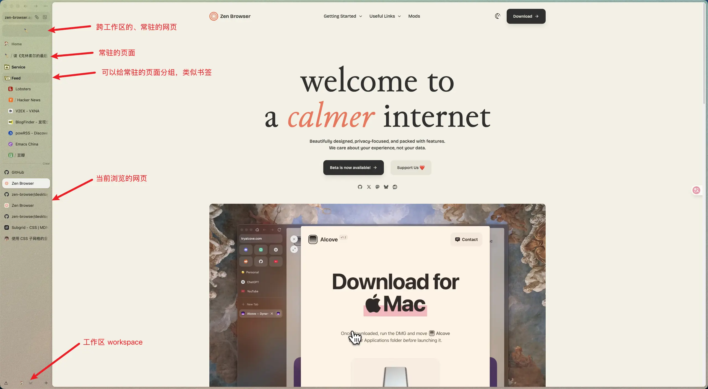
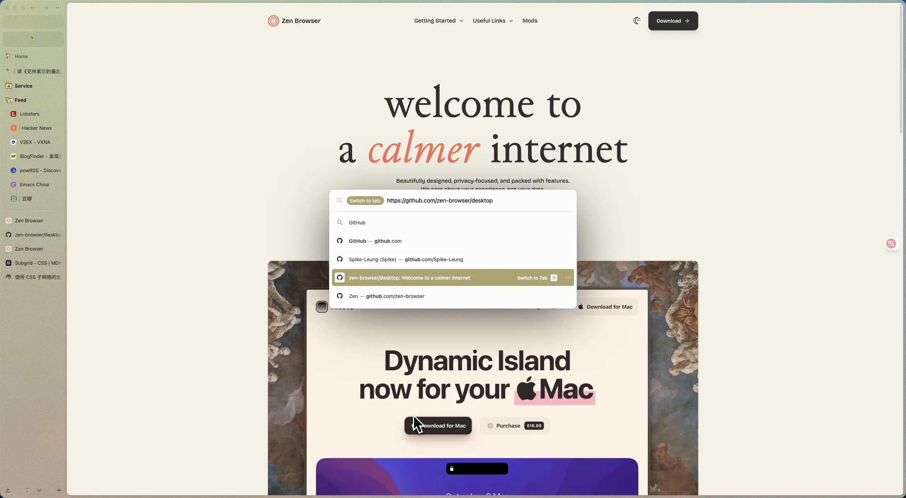
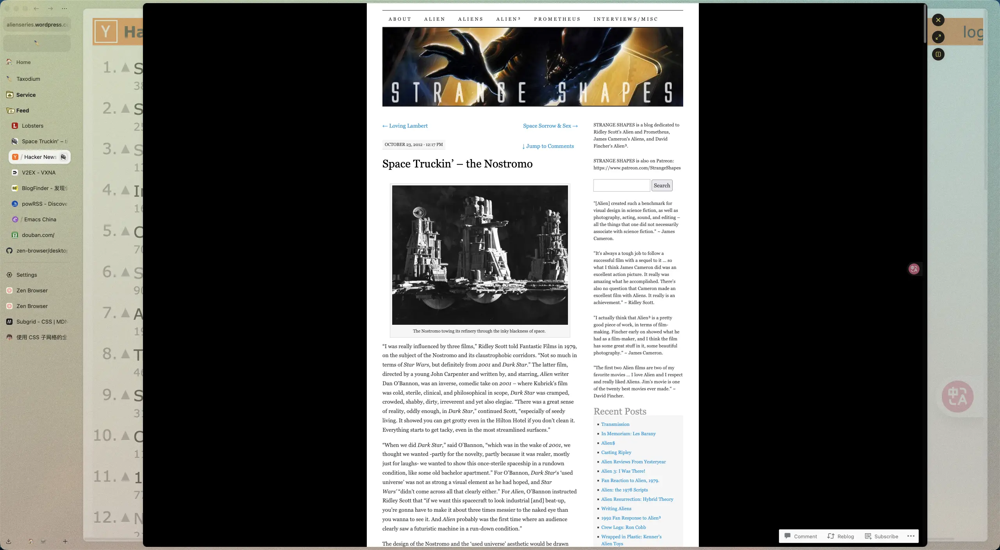
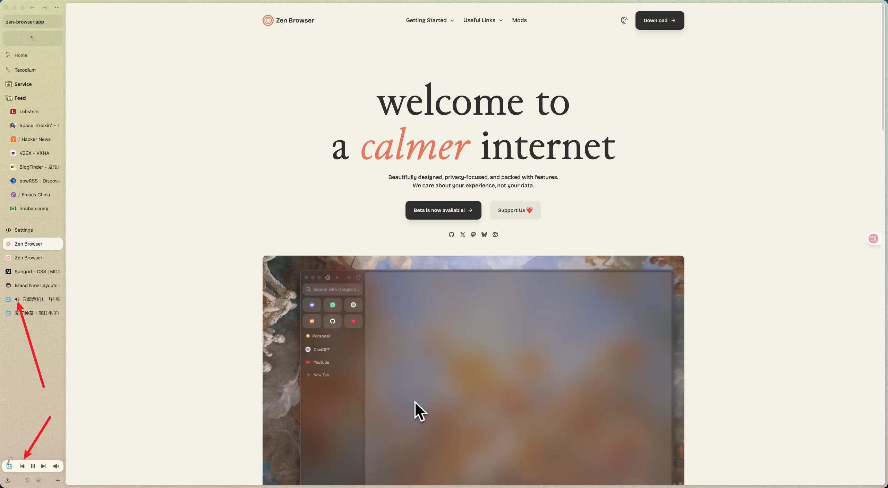

日常#8
Zen 浏览器、白描、博客图片压缩脚本
最近把浏览器从 Chrome 换成了 Zen，Chrome 现在有点一家独大的感觉，它有更多的话语权决定一些事情，例如 Removing XSLT for a more secure browse，所以我打算换个阵营，做一点微不足道的反抗。
可选的浏览器有很多，例如 Firefox、Safari、Arc、Zen、Vivaldi 等。主流的浏览器使用体验都差不多，Arc 以前用过一阵子，感觉交互还不错，但已经停止维护了； Zen 的交互和 Arc 比较接近，是一个基于 Firefox 的浏览器，开源且还在维护，所以选择了 Zen。
用了一段时间的 Zen，它除了能满足我的基本使用，还有一些我觉得不错的特性。
1.更沉浸的浏览体验
{kind=link}

Zen 将 tab 放在了侧边栏（可以通过快捷键快速收起展开），应用的上下留白很少，使得网页能够占据足够多的空间，页面浏览起来会更沉浸一些。不过上下留白少也有一个缺点，当我需要拖动窗口时，不容易选中可拖拽的部分。
侧边栏相比顶栏，可能是鼠标移动距离、眼睛移动距离都更少一些，操作起来感觉更轻松一些。
Zen 可以将一些网页设置为常驻（Pin、钉住），和书签的作用差不多，可以放置一些访问频率比较高的网站。
Chrome 上我有不少书签，趁着这次换浏览器也整理了一下，不少链接都失效了，不少链接我现在也没兴趣了，整理完的链接我记录到了一个文件里，以后就维护这个书签文件，而不依赖浏览器的书签功能，省去一些迁移成本。
2.更方便的搜索入口
{kind=link}

Zen 弱化了地址栏，地址栏只有左上角一块很少空间，打开一个新的页面，我一般会用快捷键。
例如 CTRL + T 可以用于打开一个页面，它会出现一个类似 Raycast 一样的输入框，可以输入关键字搜索、搜索历史记录、搜索打开的 tab、使用快捷键搜索（例如我设置了 @m 搜索 MDN）。
在 Chrome 上打开一个新页面，我需要点击顶栏的 + 新增一个 tab，然后鼠标移动到地址栏，再输入关键字。而 Zen 只需要一个快捷键触发输入框，输入即可，操作上会更方便一点。
当然，Chrome 也是有快捷键的，但我却很少会用，而 Zen 或许是弱化了地址栏，会让我更习惯用快捷键。 Zen 的很多快捷键我也记不得，我只记得常用的几个：
- CTRL + T 打开新页面
- CTRL + L 编辑当前页面地址
- CTRL + W 关闭当前页面
- CMD + Shift + D 将当前页面设置为 Pin
- CMD + Shift + C 复制当前页面链接
其他功能我用的不多，就懒得记了。
3.Glance 方便快速查看页面内链接
{kind=link}

Zen 还有一个 Glance 的功能，可以把页面中的链接，以一个弹窗的形式打开，快速一瞥（Glance）链接内容。在看 Hacker News、一些有大量链接的 Weekly 还挺方便的，不用打开多个 tab 来回切换。一瞥之后觉得感兴趣，Zen 也提供了一些快捷功能，可以分屏、或者在一个新 tab 里打开。
4.视频页面的优化
{kind=link}

Zen 可以方便的对某个页面静音，在 Chrome 里面是需要在 tab 上右键操作的，而 Zen 直接点击一下就行。
当从正在播放的视频页面切换到其他页面，侧边栏会出现正在播放的视频，可以对其快速操作，例如静音、暂停、关闭、小窗，跳转，还挺方便。
最近看了些书，前阵子也付费了白描的会员，就想用用看，摸索一个高效地摘录纸质书的方法。
我的流程是：
- 看书的时候，将喜欢的段落标记
- 看完之后用白描拍照（多张）
- OCR 识别 (开会员后，一次性最多可以识别 50 张，速度也还可以)
- 将识别结果，通过 AirDrop 发送到电脑上（一个包含识别结果的 txt 文件）
- 校对文字和处理排版（识别结果还是存在一些存别字和排版错误）
用白描，相比我自己输入、或者找电子书从里面翻找，还是方便一些的，但整理一本书的摘录也还是挺花时间。不知道还有没有更高效的摘录方法。(或许不去摘录是最快的 :P )
博客里会用到一些图片，原始图片一般是 PNG 或 JPEG，文件大小比较大，减少图片大小的一个方法是将其转换成类似 WebP 这样体积更小的格式。
可以利用 FFmpeg 在本地完成转换，例如这是我用来转换的 Zsh 脚本：
convert_to_webp() { local qscale="${1:-75}" for img in *.(jpg|jpeg|png); do ffmpeg -y -i "$img" -qscale "$qscale" "${img%.*}.webp" done }
使用的时候，先去到的对应目录，然后执行 convert_to_webp 或者 convert_to_webp 50 进行转换，转换完成后再把原始文件删除。
尝试了不同的 qscale (quality scale)， 75 基本是不会糊的，少于 75 就会开始变糊，不过主要内容也还是能看清。如何取值，就看你对清晰度和文件大小的取舍了。